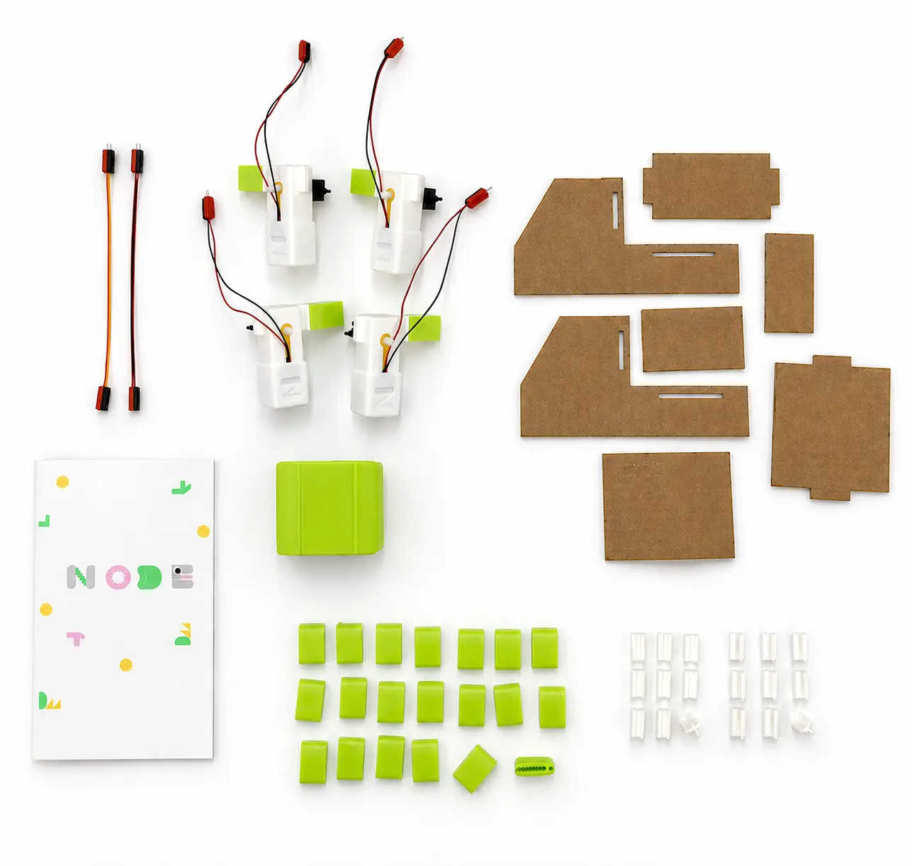

NODE Starter Kit

What is the NODE Starter Kit?
The NODE Starter Kit is the starting point for everything in the NODE system.
It includes everything needed to build your first interactive cardboard robot and begin exploring how structure, movement, and programming work together.
It is designed so students can go from unboxing to a working build in a short amount of time, without needing prior experience in robotics or coding.
What's inside the kit
The Starter Kit provides everything needed to go from unboxing to your first moving build. It is designed to be a complete ecosystem of structural and electronic parts.
- 1 Instruction booklet: Guided steps for your first projects.
- 20 Cardboard clamping claws: Custom structural grips for fast assembly.
- 9 4-tipped connectors: For perpendicular structural joints.
- 9 3-tipped connectors: For angled builds and 60-degree relationships.
- 1 NODE microcontroller unit: The pre-configured "brain" of your robot.
- 4 Extension cords: Long-reach wires for larger builds.
- 4 NODE motors: High-torque, color-coded plug-and-play motors.
- 1 Cardboard set: Pre-cut sheets for the first guided build.
Note: Extension wires are compatible with generic jumper wires. If you need more structure, additional connectors and clamps can be downloaded as free STL files for 3D printing.
Your first build
The starter experience begins with a guided project: building a simple cardboard truck.
This first build is designed to introduce the core ideas of NODE step by step. Students construct the physical structure using cardboard and connectors, attach motors, and then connect everything to the NODE module.
Once connected, they can immediately see their build come to life.
From there, they are introduced to basic adjustments like speed and movement control through a connected laptop.
From guided to creative
After the first build, the instructions gradually become less specific.
Instead of following exact steps, students are given options, variations, and challenges that encourage them to modify their designs.
They might change the structure, redesign movement, or combine ideas from previous builds.
Eventually, the goal is to move beyond instructions entirely and start creating original projects.
Designed for learning through iteration
The Starter Kit is not about building a single finished robot.
It is about building, breaking, adjusting, and rebuilding.
Students learn how small changes in structure or logic affect behavior. They start to understand design not as a fixed outcome, but as a process of continuous improvement.
Get started
If you are ready to explore NODE, the Starter Kit is the best place to begin.
Buy NowFor educators and classroom use, we recommend also reviewing the education section to understand how NODE fits into structured learning environments.
For EducationExtend the system
The Starter Kit is the foundation of the NODE ecosystem.
Once students are comfortable with the basics, they can expand their builds with additional components, including sensors and more advanced modules that unlock new behaviors and interactions.
Sensor Expansion Kit